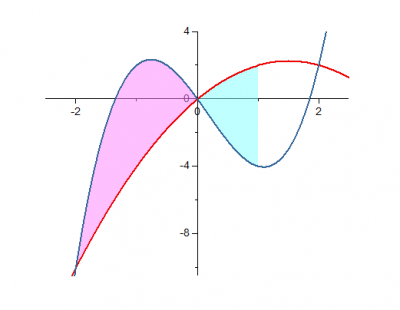
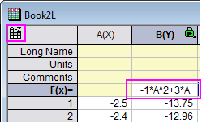

Teilflächen zwischen Funktionskurven füllen
fill-partial-area-between-curves
Zusammenfassung
Dieses Tutorial zeigt, wie Sie zwei Funktionen zeichnen und das Diagramm benutzerdefiniert anpassen, indem Sie die Fläche zwischen beiden Funktionskurven teilweise füllen.
Origin-Version mind. erforderlich: 2017 SR0
Was Sie lernen werden
- Funktionsdaten mit Hilfsmittel Werte setzen erzeugen
- Flächen zwischen zwei Linien mit unterschiedlichen Farben füllen
- Objekte zu einem Diagramm hinzufügen und bearbeiten
Schritte
Dieses Tutorial ist mit dem Ordner Fill Partial Area between Function Plots im Projekt <Origin-Verzeichnis>\Samples\Tutorial Data.opj verbunden.
Fläche zwischen Teilen von zwei Kurven füllen
Um unterschiedliche Füllfarben auf zwei oder mehr Teile einer Kurve anzuwenden, müssen Sie die Kurven in Segmenten zeichnen. In diesem Tutorial erfahren Sie, wie eine Fläche zwischen Kurven gefüllt wird, die durch X <= 1 definiert ist.
- Öffnen Sie das Projekt Tutorial Data.opj und navigieren Sie zu dem Ordner Fill Partial Area between Function Plots. Book2L enthält zwei Funktionskurven (Hinweis: Um zu sehen, wie ein Datensatz aus einer Funktion erzeugt wird, lesen Sie den letzten Abschnitt in diesem Tutorial).
- Markieren Sie die Zeilen 1~36 (-2,5 <= X <= 1) aller drei Spalten in Sheet1 von Book2L und klicken Sie im Menü auf Zeichnen: Einfache 2D: Liniendiagramm, um zwei Liniendiagramme zu zeichnen. Die zwei Datensätze (Linien) werden automatisch gruppiert.
- Kehren Sie jetzt zurück zum Arbeitsblatt, markieren Sie die Zeilen 36~51 (1 <= X <= 2,5) von allen drei Spalten und fahren Sie mit der Maus über die Kante des markierten Bereichs, bis der Cursor folgendermaßen aussieht: . Bewegen Sie den ausgewählten Bereich per Drag&Drop auf das soeben erstellte Diagramm. Wenn Sie dazu aufgefordert werden, die Achsen neu zu skalieren und alle Daten zu zeigen, wählen Sie Ja.
- Markieren und löschen Sie die Legende und die Achsentitel.

- Klicken Sie zum Öffnen des Dialogs Details Zeichnung doppelt auf eines der Liniendiagramme. Wählen Sie die erste Zeichnung im Zweig Layer1 im linken Bedienfeld.
- Gehen Sie zur Registerkarte Linie und aktivieren Sie unter Füllfläche unter Kurve das Kontrollkästchen Aktivieren. Setzen Sie Bis zur Datenzeichnung füllen - Obere und untere Farben, Datenzeichnung = Nächste Zeichnung, Füllen bis = Gemeinsamer X-Fläche und klicken Sie dann auf Anwenden. Beachten Sie, dass diese Aktion die Registerkarten Muster oben und Muster unten zu dem Dialog hinzufügt.
- Gehen Sie zur Registerkarte Gruppe und klicken Sie auf die Linienfarbliste in der Spalte Details, um die Inkrementliste Candy auszuwählen:
- Gehen Sie zur Registerkarte Muster oben und setzen Sie die Füllfarbe der schwarzen Linie auf Magenta hell bei einer Transparenz von 50%.

- Gehen Sie zur Registerkarte Muster unten und setzen Sie die Füllfarbe unter der schwarzen Linie auf Zyan hell. Beachten Sie, dass die Transparenzelemente für Muster_unterhalb abgeblendet sind und auf Auto gesetzt sind, das heißt, dass die Füllung die gleichen Transparenzeinstellungen wie Muster_oberhalb verwendet.
- Markieren Sie die dritte Zeichnung im linken Bedienfeld, gehen Sie zur Registerkarte Gruppe, klicken Sie auf die Linienfarbliste in der Spalte Details, um die Inkrementliste Candy auszuwählen:
- Klicken Sie auf OK, um den Dialog zu schließen. Die Fläche zwischen den Kurven, für die X<=1 gilt, ist jetzt gefüllt.
 |
Beachten Sie, dass Sie als eine Alternative zu den Bedienelementen der Registerkarte Linie im Dialog Details Zeichnung auch zwei beliebige Zeichnungen im Diagrammlayer mit Hilfe der Strg-Taste auswählen können und dann die Füllungen zwischen den ausgewählten Kurven mittels der Minisymbolleistenschaltflächen anwenden.
|
Achsenbereich ändern
- Wir möchten den Anzeigebereich der X- und Y-Achse ändern. Klicken Sie dazu auf die X-Achse und in der Minisymbolleiste auf die Schaltfläche Achsenskalierung, um den Dialog Achsenskalierung zu öffnen, wie unten zu sehen. Setzen Sie den Anzeigebereich auf die Werte von -2,5 bis 2,5 mit der Hilfsstrichsdicke = 2.
- Tun Sie dasselbe mit der Y-Achse, um den Y-Achsenanzeigebereich von -10,5 bis 4 mit der Hilfsstrichsdicke = 4 festzulegen.
- Um die X- und Y-Achsen zu konfigurieren, so dass sie sich bei 0,0 schneiden: Klicken Sie doppelt auf die X-Achse, um den Dialog Achse zu öffnen. Gehen Sie zur Registerkarte Linie und Hilfsstriche und wählen Sie sowohl Unten als auch Links im linken Bedienfeld des Dialogs Achsen. Setzen Sie die Achsenposition auf Bei Position = 0.
- Klicken Sie auf OK, um den Dialog zu schließen. Löschen Sie die Achsentitel und wählen Sie dann die zwei Liniengruppe getrennt, um die Breite mit Hilfe der Symbolleiste Stil auf 2 zu setzen. Das Diagramm sollte folgendermaßen aussehen:
- 
Spezielle Punkte mit Beschriftungen hinzufügen, um Überschneidungen mit Anmerkungen zu versehen
Im obigen Diagramm gibt es drei Schnittpunkte der zwei Funktionskurven. Wir markieren zwei von ihnen, bei X = -2 bzw. X = 2.
- Klicken Sie bei gedrückter Strg-Taste erneut auf den Schnittpunkt bei X = -2, um diesen einzelnen Punkt auszuwählen, und klicken Sie dann mit der rechten Maustaste auf ihn und wählen Sie Punkt bearbeiten, um den Dialog Details Zeichnung zu öffnen. Erfahren Sie mehr darüber, wie ein einzelner Punkt im Diagramm gezeigt und benutzerdefiniert angepasst wird.
- Im aufgerufenen Dialog sehen Sie einen speziellen Punkt. Er zeigt, dass sein Zeilenindex hinzugefügt und in der zweiten Zeichnung ausgewählt wurde.
- Gehen zur Registerkarte Symbole und passen Sie seinen Stil folgendermaßen benutzerdefiniert an:
- Gehen Sie zur Registerkarte Ankerlinie, aktivieren Sie die vertikale Ankerlinie und legen Sie seinen Stil, wie unten zu sehen, fest:
- Gehen Sie zur Registerkarte Beschriftung, aktivieren Sie das Kontrollkästchen Aktivieren, setzen Sie das Beschriftungsformat auf (X,Y) und die Schriftgröße auf 22.
- Klicken Sie auf OK, um den Dialog zu schließen. Führen Sie entsprechende Schritte wie in Schritt 1 durch, um einen weiteren Schnittpunkt bei X = 2 (Zeilenindex = 46) hinzuzufügen.

Legen Sie dann den gleichen Stil für ihn fest. Am Ende erhalten Sie ein Diagramm, wie unten zu sehen:
Funktionsformeln und Achsenpfeile hinzufügen
- Um die Beschriftungen der Achsenhilfsstriche bei (0,0) auszublenden, öffnen Sie den Dialog Achsen erneut und gehen Sie zur Registerkarte Spezielle Hilfsstriche. Legen Sie die Einstellungen für das Symbol Unten dann, wie unten zu sehen, fest und tun Sie das Gleiche für das Symbol Links.
- Um an den Enden der Achsen Pfeile hinzuzufügen: Gehen Sie zur Registerkarte Linie und Hilfsstriche im Dialog Achsen. Wählen Sie die Symbole Unten und Links im linken Bedienfeld des Dialogs Achsen. Erweitern Sie den Knoten Pfeil, aktivieren Sie das Kontrollkästchen Pfeil am Ende und setzen Sie die Breite auf 5.
- Klicken Sie doppelt auf die X-Achse, um den Dialog Achsen zu öffnen. Gehen Sie zur Registerkarte Referenzlinien, geben Sie 1 im Textfeld Referenzlinien bei Wert ein und klicken Sie dann auf eine beliebige Stelle in der Listentabelle, um eine Referenzlinie bei X = 1 hinzuzufügen. Nehmen Sie folgende Einstellungen vor:
Klicken Sie auf die Schaltfläche Details, um den Linienstil festzulegen.
Klicken Sie auf OK, um diesen Dialog zu schließen. Klicken Sie dann auf OK, um auch den Dialog Achsen zu schließen.
|
Sie können auch das Hilfsmittel Gerade hinzufügen verwenden (über das Menü Einfügen: Gerade hinzufügen), um eine vertikale Linie bei X = 1 hinzuzufügen.
|
- Um die Formeln der zwei Kurven zu dem Diagramm hinzuzufügen, klicken Sie mit der rechten Maustaste auf einen leeren Bereich und wählen Sie Text hinzufügen. Geben Sie ein beliebiges Zeichen in das Objekt ein, um zuerst ein Textobjekt zu erstellen. Klicken Sie mit der rechten Maustaste auf das Objekt und wählen Sie Einstellungen im Kontextmenü, um den Dialog Objekteigenschaften zu öffnen. Geben Sie die erste Formel auf der Registerkarte Text ein.
y=-x\+(2)+3x y=2x\+(3)-x\+(2)-5x
- Klicken Sie auf OK, um den Dialog zu schließen. Fügen Sie ein weiteres Textobjekt hinzu und öffnen Sie den Dialog Texteigenschaften erneut, um die zweite Formel oben auf der Registerkarte Text einzugeben. Klicken Sie wieder auf OK. Diese zwei Formeln wurden nun beide zum Diagrammfenster hinzugefügt. Positionieren Sie sie nach Belieben neu.
- Wählen Sie das Hilfsmittel Gekrümmter Pfeil und fügen Sie zwei gekrümmte Pfeile hinzu, um die Formelbeschriftungen mit den Liniendiagrammen zu verbinden.
- Das Endergebnis sollte folgendermaßen aussehen:
Funktionsdaten mit dem Hilfsmittel Werte setzen erzeugen
- Öffnen Sie eine neue Arbeitsmappe. Wählen Sie Neue Spalten anhängen, um 3 Spalten zu dem Arbeitsblatt hinzuzufügen.
- Klicken Sie mit der rechten Maustaste auf Spalte Col(A) und wählen Sie Spalte füllen mit: Eine Reihe von Zahlen.
- Legen Sie im Dialog patternN die folgenden Parameter fest:
- Klicken Sie doppelt auf die Beschriftungszeile F(x) von Col(B), um den Modus der direkten Bearbeitung einzuschalten. Geben Sie dann -1*A^2+3*A ein.

|
Hinweis: Seit Origin 2017 wurde ein neues Bedienelement, die Vereinfachte Zellennotation (SCN), hinzugefügt und per Standard aktiviert. Origin unterstützt das Verwenden des Spaltenkurznamens als Notation in der Spaltenformel, wie z. B. A+1 anstatt col(A)+1.
Bei früheren Versionen müssen Sie stattdessen -1*col(A)^2+3*col(A) eingeben.
|
- Markieren Sie col(C), klicken Sie mit der rechten Maustaste darauf und wählen Sie Spaltenwerte errechnen im Kontextmenü aus, um den Dialog Werte setzen zu öffnen. Geben Sie in diesem Dialog die Formel und die Bereichsdefinition, wie unten zu sehen, fest: